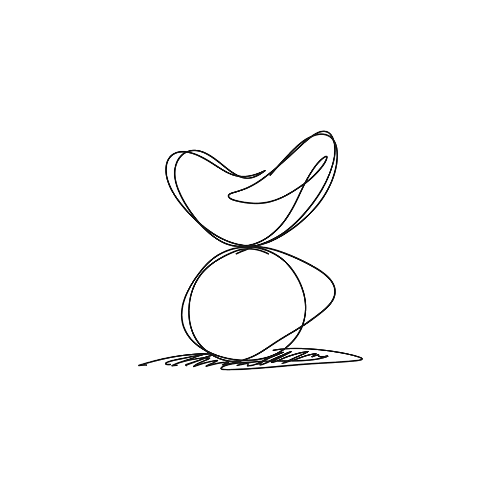
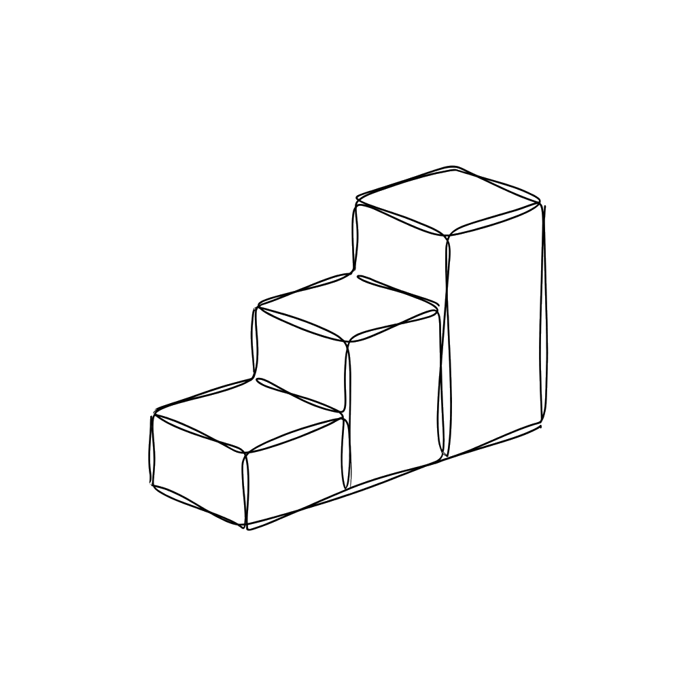
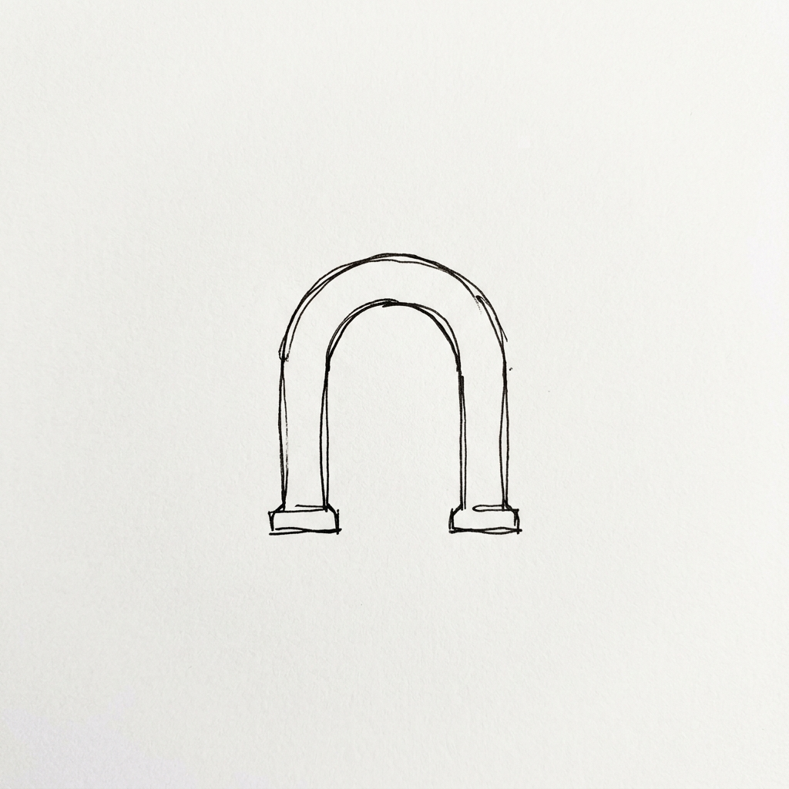

Tu empresa no necesita un abogado de planta.
Necesita dejar de estar desprotegida.
No te vamos a esperar a que tengas un problema.
Revisión de contratos, actas de asamblea y blindaje legal continuo, según la etapa de tu empresa.
¿Tu empresa firma
contratos todos los meses?
Contratos en orden, sin contratar a un abogado de planta.
Revisión mensual de un contrato simple, una consulta legal breve y acceso a herramientas para mantener tus acuerdos claros y actualizados.
¿Prefieres empezar con un diagnóstico? Reporte de Riesgo Contractual — desde $3,990
No es lo que piensas
Lo que piensas
La realidad
Te acompañamos según
dónde está tu empresa.
No vendemos trámites sueltos. Entramos en tu operación según lo que necesitas hoy — y crecemos contigo.

Etapa temprana
Miedo real: ¿Qué pasa si mi socio o un inversionista quiere sacarme de mi propio negocio?
Promesa: Blindamos tu acuerdo de socios y cap table desde el día uno para que no pierdas el control.

En crecimiento
Miedo real: ¿Y si me cae una demanda laboral o un cliente no me paga por firmar algo mal?
Promesa: Tu dirección jurídica interna revisa todo antes de que lo firmes, sin el sueldo de un equipo completo.

Consolidadas
Miedo real: ¿Y si una cláusula invisible nos frena una operación millonaria?
Promesa: Un socio de cabecera auditando volumen de contratos y respaldando cada decisión estratégica.
Tu empresa firma todos los meses. ¿Alguien la lee?
Cada contrato que firmas sin revisar es un riesgo que no ves hasta que es tarde: una cláusula de penalización, un plazo que se te fue, una responsabilidad que aceptaste sin querer.
Un abogado de planta cuesta un sueldo. Un despacho por hora es impredecible. Firmar a ciegas sale más caro que los dos. Hay un punto medio — y es esto.